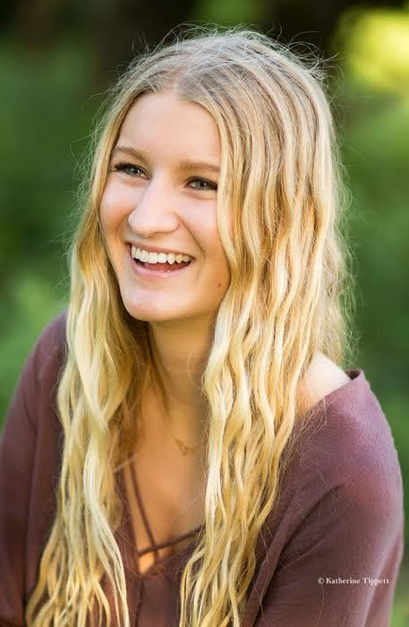
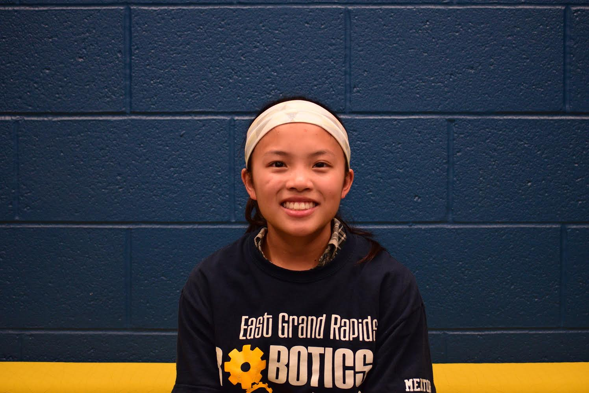

The Team
FRC Team #5980
Seniors
Emily
Favorite food: Sushi "I wanted to learn more about engineers because I hope to be one."
Chase
Favorite food: Sushi "I like engineering and being part of the team."
Donny
Favorite food: falafel "I eat sleep and die for engineering."
Ella

Favorite food: All the Chocolate "To learn more about engineering and design."
Juniors
Clara
Favorite food: Hummus "My brother did robotics last year and he inspired me to join."
Carlie
Favorite food: Steak "I am interested in coding so I can hack people ;) ." sketchy link here
Ethan
Favorite food: Scalaped potatoes "It seemed interesting and I wanted something else to do during the year."
Paul
Favorite food: Hamburger helper "I joined to learn more about engineer."
Sophomores
Anton
Favorite food: German food "I am interested in engineering and love coding."
Chris
Favorite food: Lasagna "I am interested in studying STEM fields in college."
Danielle
Favorite food: Chicken but not grilled "I think engineering is cool."
Julius
Favorite food: Ravioli ravioli give me the formioli "I could probably beat you in smash bros."
Lauren
Favorite food: spaghetti "I joined because my brother is doing it and my brother heard of past year success."
Nathan
Favorite food: Crab "I wanted an area to express my skillz *Im the webmaster*"
Peter

Favorite food: Indian food "I joined robotics because I was looking for something with science to do, my dad found robotics and it looked fun."
Freshmen
Clay Christopherson

Favorite food: Noodles straight up "For friendship and to learn how to build a robot."
Jack

Favorite food: Chicken Flavored Ramen "I joined to have fun and I like to look good."
Jacob
Favorite food: grapes "I've done robotics since 5th grade."
Otis
Favorite food: Peperoni bacon pizza "Battlebots inspires me"